01 Overview — HDL 的全貌
示意圖與文字、Y 圖的層級與觀點、結構模型與功能模型。原始投影片 42 張，估計閱讀 60 分鐘。
學習目標
- 說明廣義的 HDL 是什麼，並區分 HDL 與 NETLIST 的差別。
- 在 Y 圖上指出「層級 (level)」與「觀點 (view)」兩個座標，並說明 EDA 工具在圖上扮演的角色。
- 分辨結構模型與功能模型，並說出各自常用的表示法。
- 讀懂邏輯層的四種功能模型：真值表與基本立方體、狀態表、BDD、程式。
- 認識 Huffman 模型，並能把狀態圖轉成狀態表。
- 說出 Verilog 檔案與模組的基本外觀，以及 Verilog 裡「block」這個詞的各種用法。
1.1 課程資訊與教材
投影片 p.1–4
課程基本資料
本課程全名為 Hardware Description Language -- Logic Design using Verilog，授課者為彰化師範大學電子工程系黃宗柱老師 (Tsung-Chu Huang)，封面日期 2022/09/15。
參考書與評分（p.2）
| 參考書 | Mark Gordon Arnold, Verilog Digital Computer Design: Algorithms into HardwareI, ISBN: 0136392539, Prentice Hall PTR, 1999. |
|---|---|
| 課程網站 | dlearn.ncue.edu.tw；testlab.ncue.edu.tw/tch [lecture] |
| 工具 | ModelSim-Altera, Quartus II, EP3C16K |
| 時數 | 2W 9:05-12:00、15W 8:30am-12:00（可能因會議請假一次） |
| 評分 | HW+Quiz 5% × 4；Practice Test 20% × 2；Paper Exam 20% × 2；Bonus Project 20% × 1（選擇性） |
開發板：Terasic Altera DE0 Cyclone III Design Kit（p.3）
課程使用的元件是 SoPC (System-on-a-Programmable-Chip)，型號 EP3C16F484C6N。投影片用引線把型號每一段的意義標出來：
| 欄位 | 意義 |
|---|---|
EP | EPROM ➜ Flash |
3C | Cyclone III |
16 | #LEs = 16k（邏輯單元數） |
F | Flip-chip package |
484 | #pins = 22x22 |
C6 | speed（速度等級） |
N | eNgineering sample |
軟體端為 Quartus II 9.0~13.1 Web Edition（免費）。投影片要求「Install by next week!」。
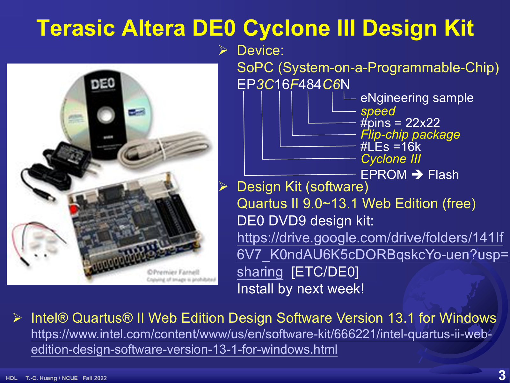
課程進度表（p.4）
| Mn | Topics | W | Lec. | Content | Lab | Content |
|---|---|---|---|---|---|---|
| 1st | Verilog / Language / ModelSim / I/O | 1 | 01 | Overview | 01 | N-bit Adder |
| 2 | 02 | View, Level, Hierarchy | 02 | FFs, Cnt, fDiv | ||
| 3 | 03 | Type, Op, 4Mdl,8Blks | 03 | 7Seg, BCD_Timer | ||
| 4 | 04 | ASM, Serial Multipliers | 04 | Scroll Snake | ||
| 2nd | Quartus II / Design Flow / CU | 5 | 05 | Exam, FSM | 05 | Button-press time |
| 6 | 06 | Morse Codes | 06 | Morse Codes | ||
| 7 | 07 | UART | 07 | UART | ||
| 8 | 08 | Setup-Hold Timing | 08 | Multiplication timing closure | ||
| 3rd | EDA Scripting / ALU, MU | 9 | 09 | Exam, Fixed-Point | 09 | Practice |
| 10 | 10 | Booth Multipliers, IEEE754 | 10 | Booth EDA Scripts | ||
| 11 | 11 | CORDIC, ROM | 11 | CORDIC EDA Scripts | ||
| 13 | 12 | ROM &RAM | 12 | Memory Controller | ||
| 4th | CPU design / in Verilog | 14 | 13 | Intro CPU Design, SAP3x5 | 13 | SAP3x5 |
| 15 | 14 | SAP444 | 14 | SAP444 | ||
| 16 | 15 | Introduction to MIPS | 15 | Tiny MIPS | ||
| 17 | 16 | SPIM and Implementation | 16 | SPIM Assembly | ||
| 18 | - | Bonus Proj. | Exam | Practice |
表格註腳照錄：W3, 7, 11, 16 8:30am quiz; W5, 14 paper exam; W9, 18 practice exam
p.4 的註腳與 p.12 的評分列出的週次不一致（p.4 寫小考 W3/7/11/16、筆試 W5/14；p.12 寫小考 W3/7/11/15、筆試 W5/13）。兩處都照原文保留，沒有擅自統一。
1.2 為什麼要學硬體描述語言
投影片 p.5–7
軟硬體的三種關係（p.5）
- 軟硬有別：Speed, Power, (Chip) Area, Cost, EZ。
- 軟硬不分：軟硬體在一定前提下可以互換。
- 軟硬共設計：考慮前提決定軟硬架構比例最佳化。
投影片列出本課程 (This Course) 要走的路線：
- Logic Design 硬體基礎（電子二）
- 描述硬體的軟體
- 設計 CPU、指令及其組合語言
- 設計組合語言軟體
- 由 C 語言演算法轉換成 Verilog 硬體有限狀態機
- (甄戰 !!!)
本章大綱（p.6）
- Introduction to General HDL including NETLIST
- Competition btw VHDL and Verilog
- HDL Tools
- Application of VLSI HDL
- Y-Chart: Level and Views
- Modeling
- Quick Tutorial using 1 or 2 Tools（Gate-Level、Behavioral Mode）
- Preparation for Next Course
HDL 的常見應用（p.7）
- 邏輯模擬與驗證 (Logic Simulation and Verification)
- 合成到 FPGA/SoPC 做原型 (Synthesis for FPGA/SoPC Prototyping)
- 合成到標準單元式 VLSI 設計 (Synthesis for Cell-base VLSI Design)
- 軟性智財設計 (Soft Intellectual Property (IP) Design)
- 為同層或更低層的電路建模 (Modeling Low or Equal Level Circuit)
1.3 廣義的 HDL：示意圖與文字、HDL 與 NETLIST
投影片 p.8
這一頁是全章的關鍵觀念。投影片畫成一個 2×2 矩陣：橫軸是表示形式，縱軸是抽象層級。
| Schematic/Graph（示意圖） | Text Language（文字語言） | |
|---|---|---|
| Gate-Level Above（閘級以上） | SCHEMATICS | HDL |
| Transistor-Level（電晶體級） | SCHEMATICS | NETLIST |
同一列的左右兩格描述的是同一件事、同一個層級，只差在「圖」或「文字」。而同樣是文字，閘級以上叫 HDL，到了電晶體級就叫 NETLIST。
module adder(A, B, C, S);
input [31:0] A, B;
output [31:0] S;
output C;
…
ends原文最後一行是 ends，正確的 Verilog 關鍵字應為 endmodule。此處照抄投影片，不修正。
VDD V 0 3V
M1 Z IN 0 0 NCH
M2 Z IN V V PCH
R1 A IN 15
C1 Z 0 1P
VIN A 0 PWL(0 0 1N 3V)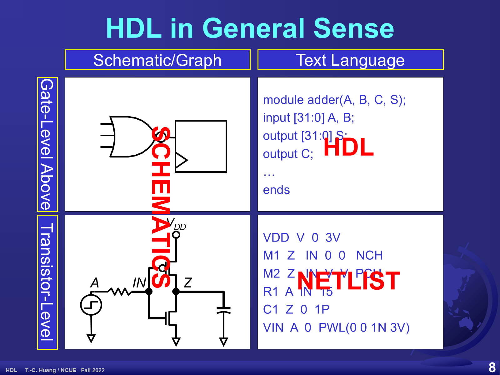
1.4 主要 HDL 的定位與發展史
投影片 p.9–11
各語言的定位（p.9）
投影片用一張定位圖安排各語言：縱軸是抽象層級（由下往上為 Transistor Level、Gate Level、RTL、System Level），橫軸由左至右是 Digital、Mixed-Signal、Analog。每個語言畫成一條色帶，涵蓋它所能描述的層級範圍。
| 語言 | 涵蓋層級 | 領域 |
|---|---|---|
| VHDL (1980) | Gate Level → System Level 以上 | Digital |
| Verilog (1990) | Transistor Level → RTL 以上 | Digital |
| Verilog-A | Verilog 色帶底部的薄帶 | Mixed-Signal / Analog 介面 |
| SPICE (1970) | Transistor Level 及以下 | Analog |
| SystemVerilog (2000) | Gate Level → System Level | Digital |
| SystemC (2000) | RTL → System Level 以上 | Digital |
| HLS C++ (2010) | RTL 以上 → 最高抽象層 | Digital |
圖上另有一組註記 engine { 與 } format 夾住 SPICE 與 Verilog-A，意思是 SPICE 是引擎、Verilog-A 是格式。
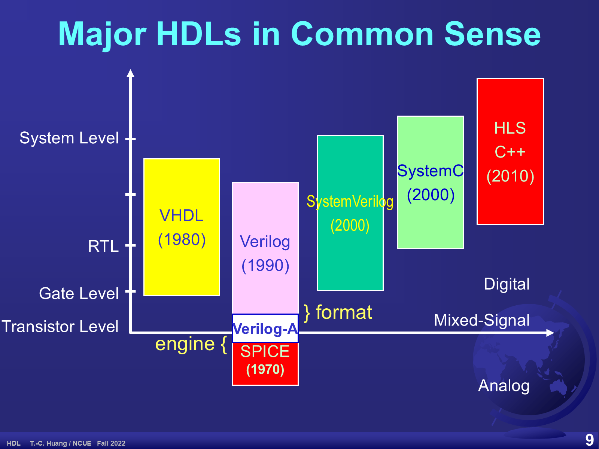
發展史（p.10）
| Year | VHDL | Verilog | SystemC |
|---|---|---|---|
| 1971 | Paul Huang (黃炎松), NCTU-E59 | ||
| 1981 | US Defense, Spec of ASIC | ||
| 1982 | Paul founding Cadnece | ||
| 1983 | Prabhu Goel, Automated Integrated Design Systems | ||
| 1984 | Phil Moorby, renamed to "Gateway Design Automation" | ||
| 1987 | IEEE S1076 | ||
| 1990 | purchased by Cadence →Verilog XL | ||
| 1990 | Open Verilog International (OVI) →Accellera | ||
| 1992 | IEEE Grouping | ||
| 1995 | IEEE S1364 | ||
| 2001 | IEEE S1364-2001:Scalability | ||
| 2005 | IEEE S1364-AMS, 1800 System-Verilog | ||
| 2008 | IEEE S1076-2008 | ||
| 2011 | IEEE S1666 |
表中 1982 年的 Cadnece 是投影片本身的錯字，正確公司名為 Cadence。此處照原文保留。
兩條主線值得記住：VHDL 源自 1981 年美國國防部的 ASIC 規格需求，1987 年成為 IEEE S1076；Verilog 源自業界模擬器，1990 年被 Cadence 買下成為 Verilog XL，1995 年成為 IEEE S1364。本課程使用 Verilog。
模擬器清單（p.11）
投影片上另有一個浮動方框標著 IEEE Standard 1364-2001。清單照錄：
- VerilogXL, LeapForm, LDV, NCV /Cadence
- ModelSim /Mentor（Download ModelSim-Altera Starter Edition）
- VSS /Synopsys
- Vantage /ViewLogic
- Silos /SimuCAD
- Verilogger Pro /SynaptiCAD (http://www.syncad.com)
- ActiveHDL /Aldec
- VeriBest /VeriBest
- VeriWell /VeriWell
- Debussy /SpringSoft
- VCS /Chronologic
- FrontLine /FrontLine
- Silos /SimuCAD
- HDL Entry in FPGA Co., e.g., Max/Quartus(Altera), ISE(Xilinx)
Silos /SimuCAD 在原投影片中出現兩次（第 5 項與第 13 項），此處照原文保留重複項。
1.5 下週準備與評分方式
投影片 p.12
- 安裝 Intel-Altera Quartus II 13.1，含 Cyclone III 與 ModelSim。
- 線上試玩一次 Verilog (Try a Verilog Online)。
- 自行練習示意圖工具；投影片舉例 OrCAD/Schematic 是最普及也最基本的工具。
- 本課程每週四 8:30am 開始。
評分 (Scores) 照錄：
- Quiz or Practice：8:30am Week 3, 7, 11, 15，每次 5%
- Paper Exam：Week 5, 13，每次 20%
- Practice Exam：Week 9, 18，每次 20%
- Bonus Project：「Tiny MIPS on Cyclone III」，以 SPIM demo，20%
此處週次與 p.4 註腳不同（p.4：小考 W3/7/11/16、筆試 W5/14）。兩份都照原文呈現，實際以授課公告為準。
1.6 層級與觀點、Y 圖
投影片 p.13–16
7 層 × 3 觀點（p.13）
這張表格的格子刻意留空，因為表格本身就是教學重點：7 個層級乘上 3 個觀點，共有 21 種表示法。
| Functional-View 功能觀點 | Structural-View 結構觀點 | Physical-View 實體觀點 | |
|---|---|---|---|
| System-Level 系統層 | |||
| Board-Level 電路板層 | |||
| Register-Level 暫存器層 | |||
| Logic-Level 邏輯層 | |||
| Circuit-Level 電路層 | |||
| Transistor-Level 電晶體層 | |||
| Physics-Level 物理層 |
投影片的 XML 中，第一欄同時存在 Functional-View 與 Behavioral-View 兩個標籤（動畫的替代文字），畫面最終顯示的是 Functional-View。到了 p.16 同一欄則標為 Behavioral-View。
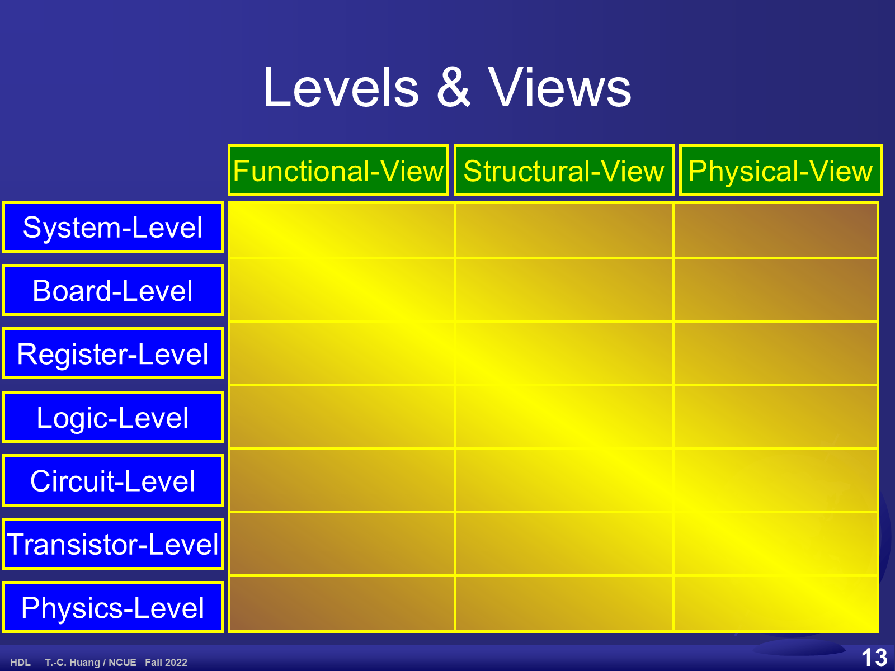
Y 圖（p.14）
投影片的說明文字是：Gajski transferred the level-view table into a sphere chart:（Gajski 把層級／觀點表格改畫成放射狀的圖。）三個軸由同一圓心向外發散，同心圓環代表抽象層級，每個扇形代表該層級的某一個觀點。
| 軸 | 由內而外 |
|---|---|
| Behavioral View 行為觀點 | UDP Symbol 方塊 → 狀態轉移圖 → if(c) then p<=a*b; 程式碼 → Spec（最外環） |
| Structural View 結構觀點 | 閘符號 (NOR / NAND / 反相器) → 暫存器與字組方塊 → MUX 加暫存器的方塊圖 |
| Physical View 實體觀點 | 單元佈局 → 封裝好的 DIP 晶片 → 含打線的電路板／晶粒 |
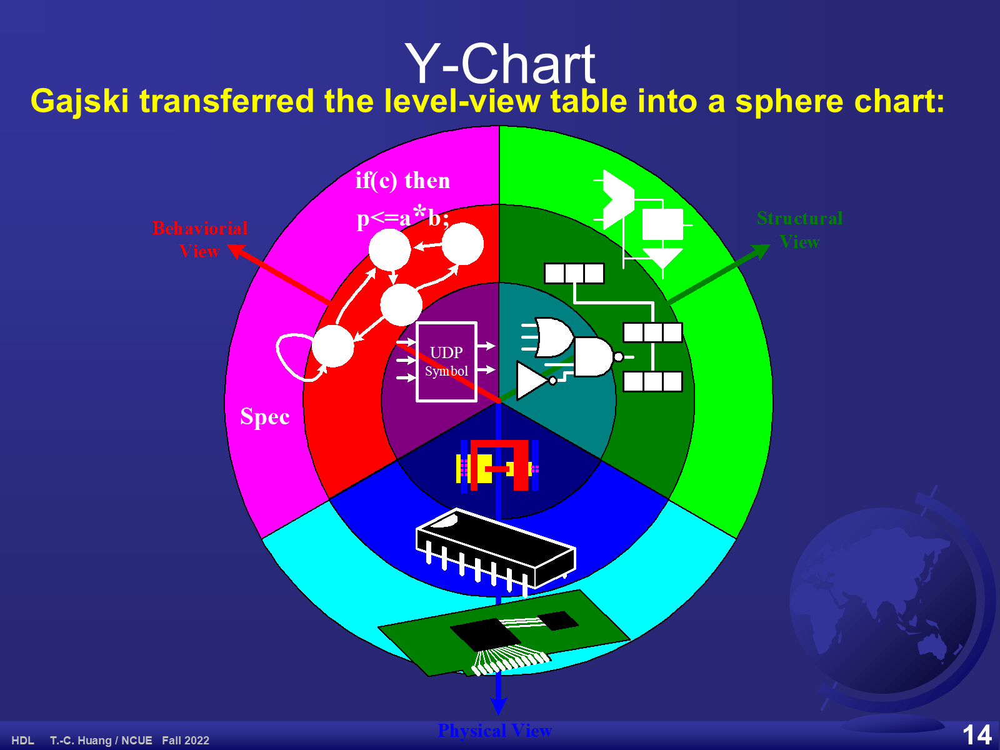
EDA 工具在 Y 圖上的位置（p.15）
這一頁把 Y 圖改畫成三條直軸加圓弧，每一條弧線就是一個 EDA 工作：弧線標著 modularization（模組化）、partitioning（分割）、synthesize（合成）、library（程式庫，在圓心的實體軸上）、sim（模擬，圓心附近的短雙箭頭）、ver（驗證，行為側外環）。
教學重點：EDA 工具就是那些弧線，每個工具負責把設計從一個觀點／層級搬到另一個觀點／層級。
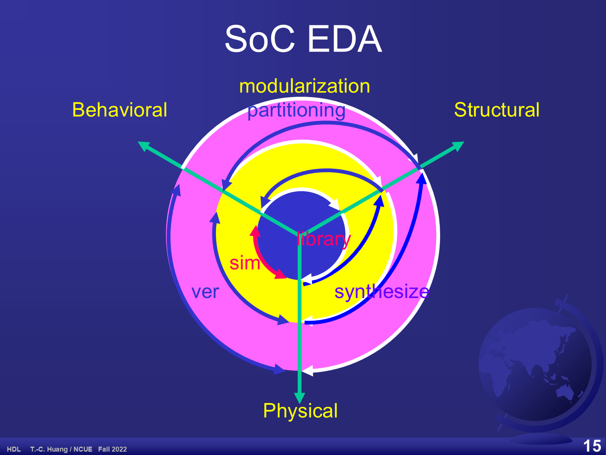
實務上常用的 3×3 與三種 coding 模式（p.16）
把 p.13 的大表縮成 3×3，再用三個斜向的橢圓圈出 Verilog 使用者實際工作的三種模式：
| Behavioral-View | Structural-View | Physical-View | |
|---|---|---|---|
| System-Level | Behavioral Mode | ||
| Register-Level | Behavioral Mode ／ RTL Mode | RTL Mode | |
| Logic-Level | Gate-Level | Gate-Level |
- "Behavioral Mode"：從系統層／行為觀點，延伸到暫存器層的行為─結構之間。
- "RTL Mode"：在暫存器層，橫跨行為觀點與結構觀點。
- "Gate-Level"：在邏輯層，橫跨結構觀點與實體觀點。
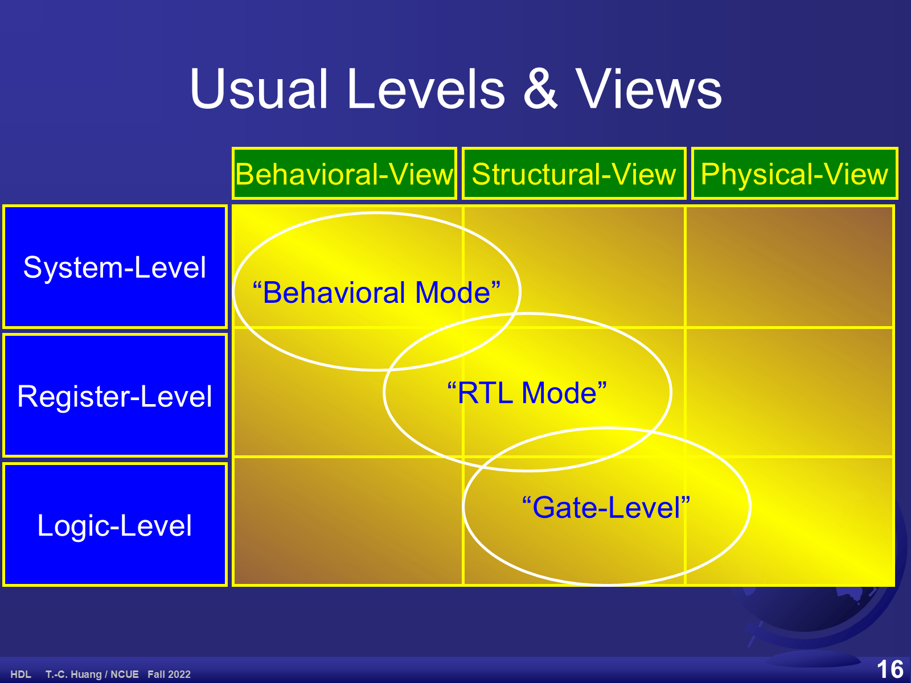
1.7 內部模型與外部模型
投影片 p.17–18
p.17 畫了一台電腦，螢幕上寫著 Program || Algorithm + Data Structure，而從螢幕冒出的思想泡泡裡是一個 NAND 閘符號與一張三個狀態的轉移圖。
教學重點：程式（演算法 + 資料結構）是內部模型；工程師腦中想像的閘與狀態機是外部模型。工具內部怎麼存，和人怎麼理解，是兩回事。
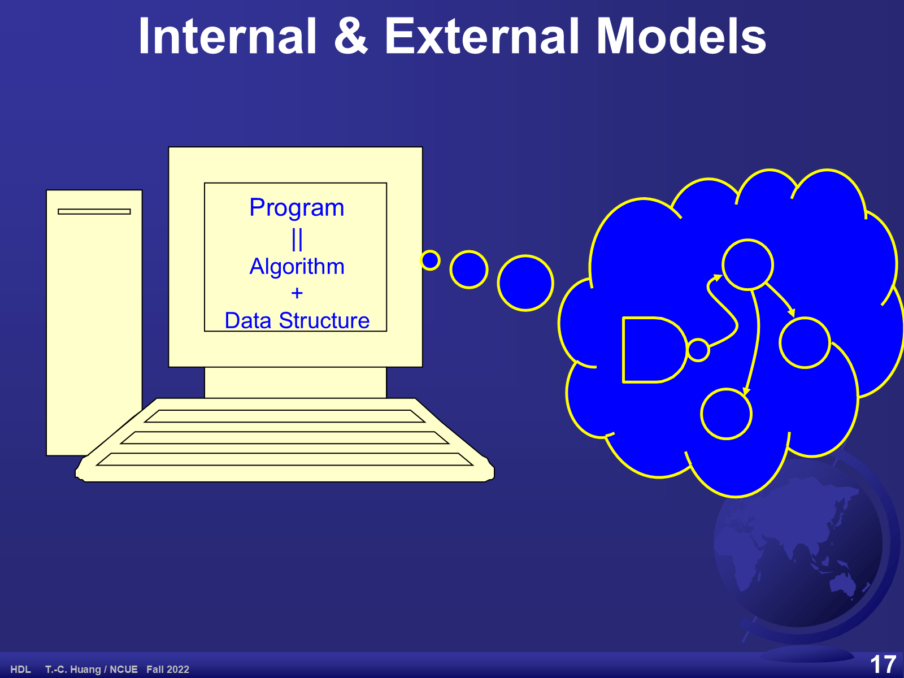
p.18 再次使用 p.14 的同一張 Y 圖，但加上左右兩個大型弧形箭頭，指出本章接下來要走的兩個方向：結構模型（右側）與功能／行為模型（左側）。
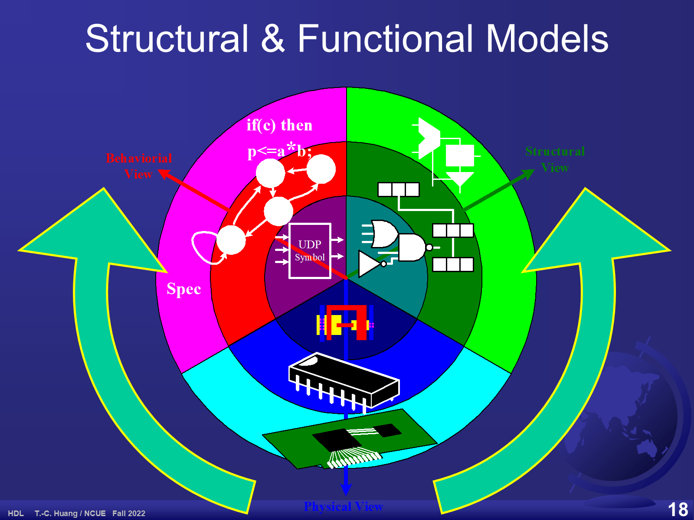
1.8 結構模型
投影片 p.19–26
結構模型的遞迴定義（p.19）
- Symbol View：一個系統或電路可以用一個帶有其功能的符號來表示。
- Structural View：一個系統（或電路）的結構觀點，是一種由「節點」與「弧」組成的表示法或模型 — 節點是子系統（或子電路）與元件，各以某個 symbol view 表示；弧則是它們的輸入／輸出關係。
- 通常是階層式的 (Usually hierarchical)。
- 最底層的方塊（元件）稱為 primitive elements，其功能模型被視為已知，例如 and、nand、or、nor、not 等。
這個定義是遞迴的：結構觀點的節點本身又是一個 symbol view，可以再往下展開成另一層結構觀點，一路展到 primitive 才停。這就是階層設計的理論基礎，第 02 章會接著談。
本節大綱（p.20）
- External Representation（外部表示法）
- Structural Properties（結構性質）
- Hardware Descriptive Languages
- Internal Representation（內部表示法）
- Example: A Simple Verilog Parser in C Language.
外部表示法（p.21）
- 給人看的文字或示意圖；連接性 (connectivity) 指定了 I/O 與元件之間的訊號。
- 文字或語言：
- HDL：VHDL, Verilog, C, etc.
- Netlist：SPICE, gat, tdl, etc.
- 示意圖：Cadence Schedmatics、OrCAD Schedmatics, ..etc.
Schedmatics 是投影片的錯字，正確拼法為 Schematics。照原文保留。
邏輯層的結構性質（p.22–23）
投影片列出 8 個結構性質。下方的互動圖以 p.23 的 7 節點閘圖為底，點選性質即在圖上高亮對應的節點或邊。
請點選上方任一性質，圖上會高亮對應的節點或邊。
投影片 p.22 的 8 個性質原文為：Branches/Fanout、Stem、Fanout-free、Reconvergent Fanout、Gate Type、Inversion、Inversion Parity、Level of a Gate in Circuit。
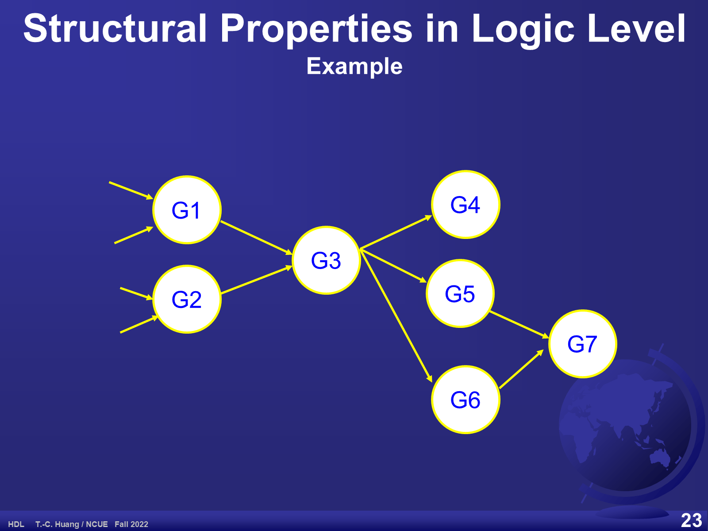
實例：ISCAS89 benchmark 的 s27（p.24）
這是一張較密集的實際電路：左側有 4 個主要輸入 0、1、2、3，下方 5、6、7 是正反器輸出的狀態節點（由右側回授）。閘以訊號編號標示：14、8、12、16、15、13、9、11、17、10。圖上以不同顏色的線追蹤個別輸入的扇出。
大致流向：0 → 14 → 8；1、7 → 12；8 與 12 扇出到 16、15、13；16、15 → 9；9 與 3 → 11；11 → 10 → 主要輸出；11、6 → 17；13、7 與 5 構成回授迴路。
這張手繪示意圖的接腳級連接關係無法從圖形座標可靠還原，因此本網站直接沿用投影片算繪圖，不以 HTML 重畫。
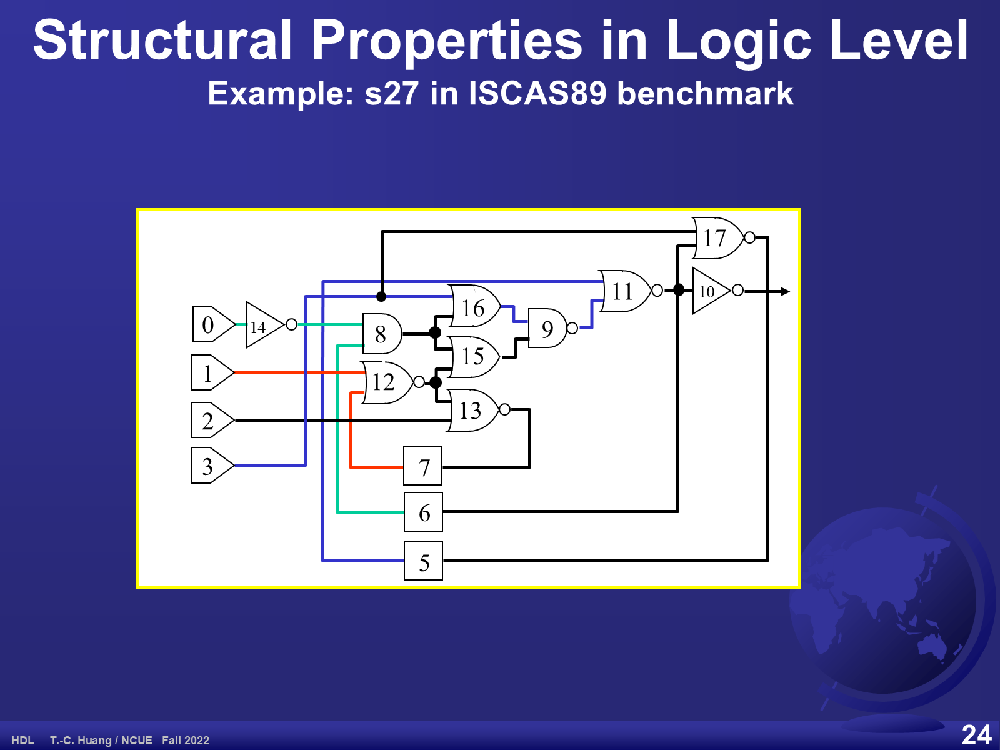
內部表示法：一個簡單的 Verilog 解析器（p.25）
投影片畫出解析器在記憶體中的資料結構：左側是模組階層的 DAG，根節點 Top module，下面掛著五個 module 節點，而且下層節點被多個上層共用（所以是 DAG 不是樹）。模組節點旁掛著 Instance 記錄（模組 → Instance 用綠色箭頭，Instance → 它所實體化的模組用黃色箭頭）。右側是一朵標著 Net List 的雲，裡面有兩個星形（一條網線連接多個接腳）；右下是層層嵌套的 Pin List、Port List 方框。
教學重點：解析器把模組（森林／DAG）、實體、埠清單、接腳清單與網線存成互相交叉連結的串列。
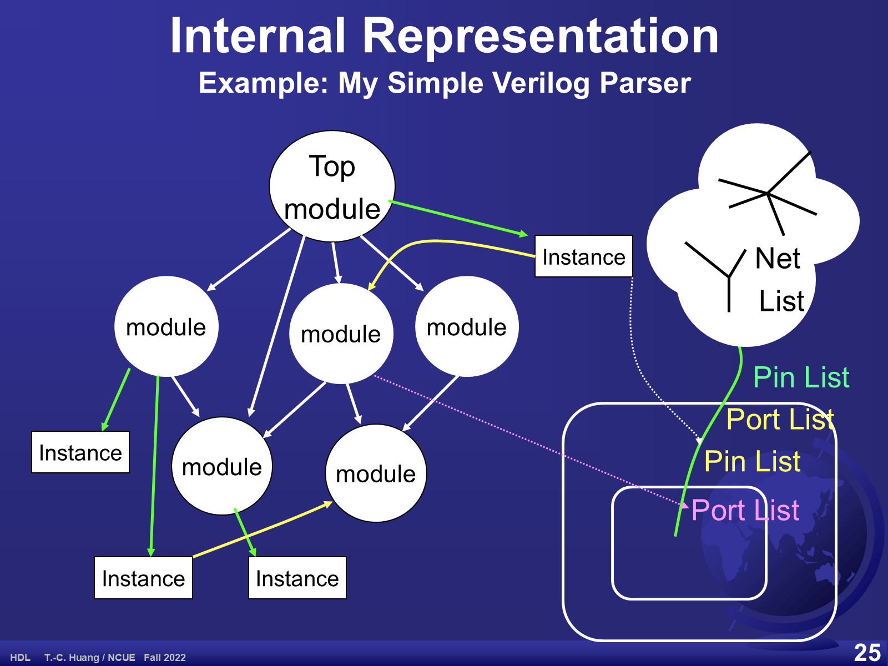
結構導向的設計方法（p.26）
左側是一張階層 DAG：Top 直接連到 A、B、D；A 連到 C、D；B 連到 D、E。注意 D 同時被 Top、A、B 使用 — 這就是重複使用。
右側的方法清單（原文自動編號 1–5）：
- Top-Down Design（由上而下）
- Bottom-Up（由下而上）
- Middle-Out（由中間向外）
- Ends-In（由兩端向內）
- Hybrid (Greedy)（混合／貪婪）
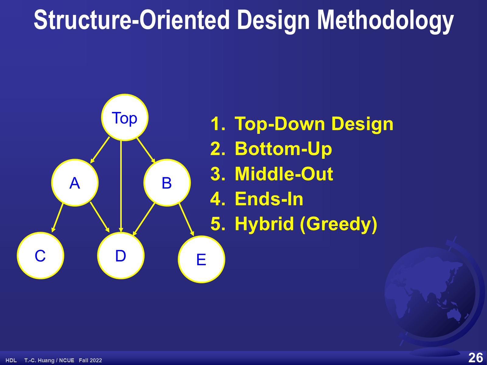
1.9 邏輯層的功能模型
投影片 p.27–33
本節大綱（p.27）
- Truth Table & Primitive Cubes.（真值表與基本立方體）
- State Table & Flow Table.（狀態表與流程表）
- Binary Decision Diagrams.（二元決策圖）
- Programs as Functional Models.（以程式作為功能模型）
真值表與基本立方體（p.28）
| A | B | C | F |
|---|---|---|---|
| 0 | 0 | 0 | 1 |
| 0 | 0 | 1 | 1 |
| 0 | 1 | 0 | 0 |
| 0 | 1 | 1 | 1 |
| 1 | 0 | 0 | 1 |
| 1 | 0 | 1 | 1 |
| 1 | 1 | 0 | 0 |
| 1 | 1 | 1 | 0 |
| A | B | C | F |
|---|---|---|---|
| X | 1 | 0 | 0 |
| 1 | 1 | X | 0 |
| X | 0 | X | 1 |
| 0 | 1 | 1 | 1 |
投影片在立方體表下方印出的式子為：F = B̄ + ĀBC（已與真值表核對一致）。
基本立方體的用途是壓縮：真值表要列 23 = 8 列，立方體只用 4 列就表達同一個函數，因為 X 代表「這一位不影響結果」。這也是測試向量產生與邏輯化簡的基礎表示法。
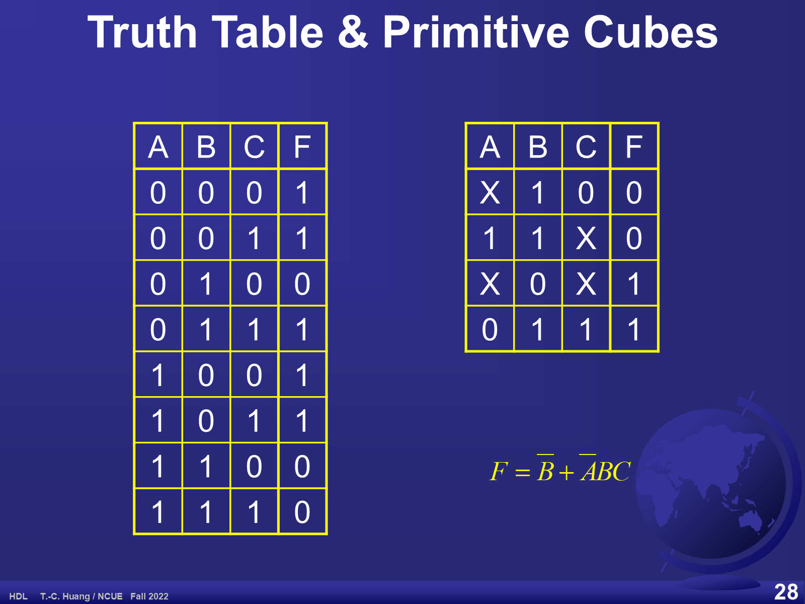
Huffman 模型（p.29）
這是同步、單一時脈、以 D 型正反器為基礎的有限狀態機標準分解方式：把電路切成「一塊組合邏輯」加「一排正反器」。
| 符號 | 全名 | 寬度 |
|---|---|---|
| X | PI: Primary Inputs（主要輸入） | L |
| Z | PO: Primary Outputs（主要輸出） | N |
| Y | PPO: Pseudo PO / NS: Next State（次態） | M |
| y | PPI: Pseudo PI / PS: Present State（現態） | M |
投影片右下的方程式為 State Count S ≤ 2M：M 個正反器最多只能編出 2M 個狀態。
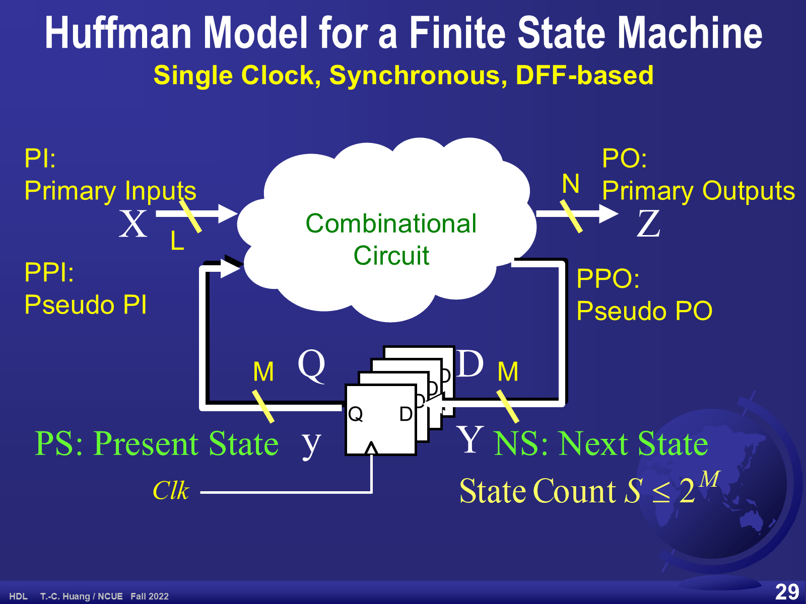
狀態圖：密碼 1011 的序列偵測器（p.30）
這是一個 Mealy 機，邊上標示 輸入/輸出。四個狀態的名稱描述「還在等什麼」：
| 編碼 | 狀態名稱 |
|---|---|
| 00 | Waiting for 1011 |
| 01 | Waiting for 011 |
| 10 | Waiting for 11 |
| 11 | Waiting for 1 |
轉移照錄：00 -0/0→ 00（自迴圈）、00 -1/0→ 01、01 -1/0→ 01（自迴圈）、01 -0/0→ 10、10 -1/0→ 11、11 -0/0→ 10、11 -1/1→ 01、10 -0/0→ 00。其中 11 -1/1→ 01 是唯一輸出 1 的邊，代表密碼比對成功。
想一步一步餵輸入看狀態怎麼走，可以到 第 05 章 §5.4 的互動步進器。
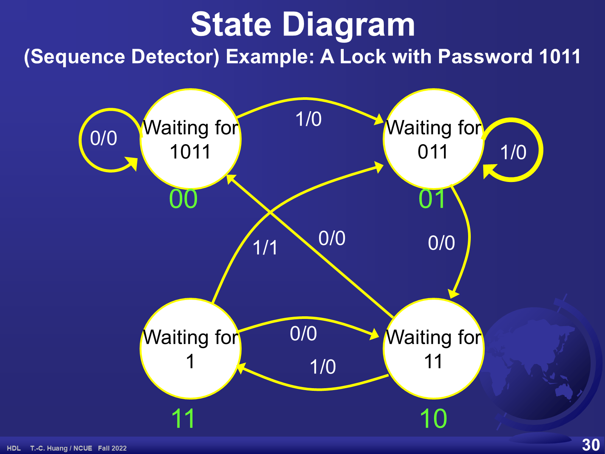
狀態表與流程表（p.31）
| Q1 | Q0 | X0 | D1 | D0 | Z0 |
|---|---|---|---|---|---|
| 0 | 0 | 0 | 0 | 0 | 0 |
| 0 | 0 | 1 | 0 | 1 | 0 |
| 0 | 1 | 0 | 1 | 0 | 0 |
| 0 | 1 | 1 | 0 | 1 | 0 |
| 1 | 0 | 0 | 0 | 0 | 0 |
| 1 | 0 | 1 | 1 | 1 | 0 |
| 1 | 1 | 0 | 1 | 0 | 0 |
| 1 | 1 | 1 | 0 | 1 | 1 |
投影片標題寫 K-map or McKlusky Method:，並印出三個式子：
D1 = Q̄1·X + Q1·Q0·X̄ + Q1·Q̄0·X
D0 = X
Z = Q1·Q0·X投影片印出的 D1 第一項 Q̄1·X 與同頁狀態表矛盾：Q̄1·X 會讓 001 與 011 兩列的 D1=1，但表上這兩列是 D1=0。D0 與 Z 與表一致。此處照原文呈現，不修改投影片。
由表反推：D1=1 只出現在 Q1Q0X = 010、101、110 三列，因此
D1 = Q̄1·Q0·X̄ + Q1·Q0·X̄ + Q1·Q̄0·X = Q0·X̄ + Q1·Q̄0·X
推測投影片第一項原本要寫的是 Q̄1·Q0·X̄（漏掉了 Q0 與 X 的反相）。
頁面右下另有一張 PLA 式的 AND 平面／OR 平面電路圖：X 經左上的反相器進入，垂直線分別承載 X、X̄、Q0、Q̄0、Q1、Q̄1；點代表連線，一個 AND 閘驅動 Z，另三個 AND 閘匯入 OR 閘，OR 閘輸出送到兩個標為 0、1 的 D 型正反器，其輸出再回授到垂直線上。
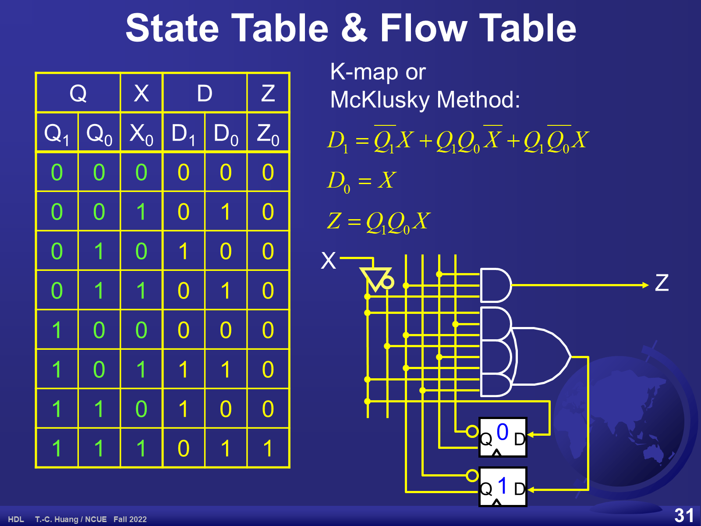
二元決策圖 BDD（p.32）
原文定義：A Binary Decision Diagram (BDD) is a graph model of the function of a circuit.（BDD 是電路功能的圖模型。）
左圖是未化簡的版本，函數為 F = AC + BC̄：根節點是 A，兩側各分支到一個 B 節點，B 再分支到 C 節點或直接到終端 0／1，邊上標 0／1。右圖標著 Reduced Ordered BDD：F 指向 C，C 以 0 邊到 B、以 1 邊到 A，只剩三個節點。
教學重點：排序 (ordered) 加上化簡 (reduced)，可以把左邊那張雜亂的圖收斂成右邊的 ROBDD。
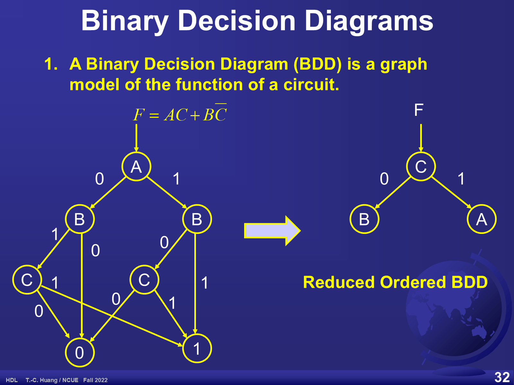
以程式作為功能模型（p.33）
投影片用三欄（原文自動編號 1–3）說明同一個函數可以寫成不同抽象層的程式。
LDA A
AND B
INV
OR C
STA Fmain(F, A, B, C)
{ int F, A, B, C;
F = ~ ( A && B ) || C;
}第 3 欄的標題是 C-Code is the direct and fast simulator.（C 程式就是最直接也最快的模擬器。）附帶的片段：
C=A+B;
A=R1*R2;
B=~B;1.10 暫存器層的功能模型 RTL
投影片 p.34–36
本節大綱（p.34）
- Basic RTL Constructs
- Timing Modeling in RTLs
- Internal RTL Models（See Internal structural model）
基本 RTL 結構（p.35）
RTL = Register-Transfer Language in Register-Transfer Level（暫存器轉移層的暫存器轉移語言）。投影片的例子：
PC←PC+1; A←A+B+CPC←PC+1; if C=1 PC←#FA07R3←A – R4; A←0
接著是 C or Verilog-like Language: 的寫法：
module Adder(Co, Sum, A, B, Ci);
Input [15:0] A, B;
Input Ci;
output Co;
output [15:0] Sum;
assign {Co, Sum} = A + B + Ci;
endmodule原文把 input 寫成大寫的 Input，Verilog 區分大小寫，這段程式無法直接編譯。此處照抄投影片，不修正。
RTL 的時序建模（p.36）
Sum = #20 A+B;
initial
begin
A=1; B=0;
#10 B=1; A=0;
#40 B=0;
#10 $stop;
end#20 這類延遲只在模擬時有意義，合成工具會忽略它。initial 區塊從 t=0 開始依序執行，常用來寫測試平台 (testbench) 的輸入波形。
1.11 工具安裝與本課程工具
投影片 p.37–38
| No. | Envir. | Verilog | Link or Installation |
|---|---|---|---|
| 1 | Online | CodingGround | tutorialspoint.com/compile_verilog_online.php |
| 2 | Online | JDoodle | jdoodle.com/execute-verilog-online/ |
| 3 | Windows | SynaptiCAD (old) | testlab.ncue.edu.tw/tch/download/download.htm |
| 4 | Windows | SynaptiCAD | syncad.com/syn_down.htm |
| 5 | Windows | ModelSim-Altera | Intel Quartus II Web Edition 13.1 下載頁 |
| 6 | Linux | ModelSim | Usually for cell-based design, ask Administrator |
| 7 | Linux | VerilogXL | Usually for cell-based design, ask Administrator |
| 8 | Linux | VNC | Usually for cell-based design, ask Administrator |
表格中的網址在原投影片是可點擊的連結。本網站為離線使用，只保留網域與路徑文字，不放外部連結。
本課程主要工具（p.38）
- Intel-Altera Quartus II 9.0~13.1
- Cyclon III
- ModelSim-Altera
投影片文字寫 Cyclon III（少一個 e，且依 p.2、p.3 課程目標元件為 Cyclone III / EP3C16），但圖中的實體板子絲印為 DE0-CV / Cyclone V。文字與照片不一致，兩者都照原樣呈現。
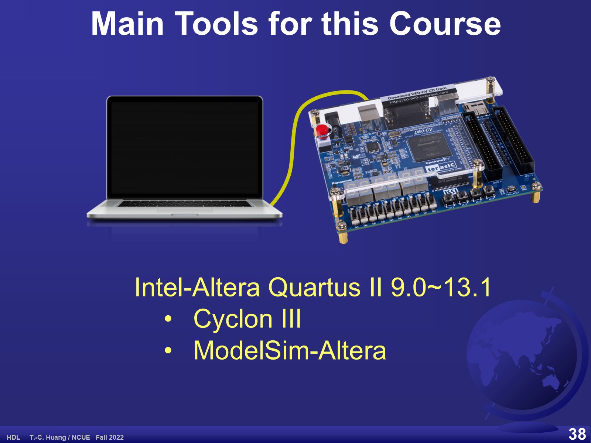
1.12 Verilog 檔案與模組的外觀
投影片 p.39–41
檔案與模組的關係（p.39）
- 1 design can have ≥ 1 files.（一個設計可以有一個以上的檔案。）
- 1 file can have ≥ modules.（一個檔案可以有一個以上的模組。）
- Outlook of a module（模組的外觀如下）
module #(parameters) Name (ports);
parameter/port declaration;
reg/wire/integer declaration;
gate netlist;
hierarchical instances;
blocks (always, initial, …)
endmodule投影片在模組本體旁加了一個旋轉的大括號，標著 parallel statements — 模組本體內的這些敘述是並行的，不是由上往下依序執行。
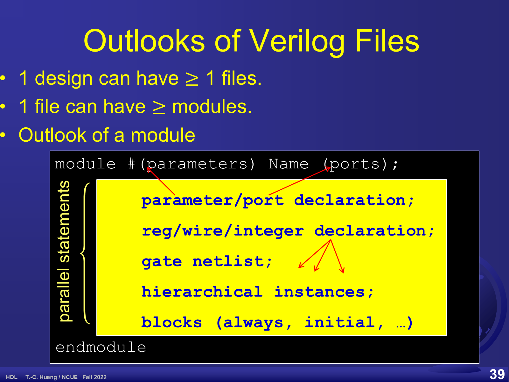
程式庫是一座森林（p.40）
左側是標著 File System 的磁碟符號，內含四個檔案圖示；右側是標著 Module Forest 的面板，裡面是四層的 DAG：最上一列 Top module1、Top module2、Top module3，第二列四個 module，第三列兩個 module，最下一列六個 gate。數個子節點被多個上層共用，所以是「多棵樹重疊」的森林。三條虛線從左側個別檔案跨到右側的模組方塊 — 同一個檔案可以提供任何層級的模組。
投影片頁尾附上 V2K 快速參考文件的連結（Verilog 2001 reference guide）。
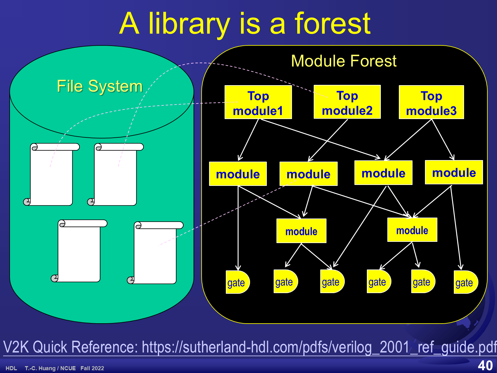
Verilog 裡的「block」（p.41）
投影片先區分詞性：
- 動詞：stopping the movement（阻擋），對應
non-blocking assignment（非阻塞指定）。 - 名詞：a cuboid or a rectangle area（一個方塊或矩形區域）。
名詞用法共 13 種（原文自動編號 1–13）：
| 類別 | 語法 | 說明 |
|---|---|---|
| Statements | begin (: name) … end | grouping（群組） |
| Module | module … endmodule | parallel statements |
| Sequential | initial (begin … end) | sequential statements from t = 0 |
| Procedural | always (begin … end) | activated at time 0 then always |
| Procedural | always @ (events) … | triggled upon the events |
| Generate | generate … endgenerate | create at time 0 |
| Case | case … endcase | switching |
| Specification | specify … endspecify | |
| Function | function … endfunction | |
| Task | task … endtask | |
| UDP | primitive … table … endtable endprimitive | user defined primitive |
| Configuration | config … endconfig | version and library control |
| For-loops | for begin (: name) … end | |
| Repeat | repeat (times) begin … end |
原文 triggled 是 triggered 的錯字，照原樣保留。
1.13 Lab01 加法器
投影片 p.42
這一頁在投影片中整頁都是圖片，沒有可選取的文字。以下是從圖面轉錄的內容。
- Hierarchically design（階層式設計）
- Half Adder (HA) 半加器
- Full Adder (FA) 全加器
- N-bit Adder N 位元加法器
- Formal Verification by Golden Test（以黃金測試做形式驗證）
- Exhautively（窮舉）
- Using a Flag, say, OK = 1（用一個旗標，例如 OK = 1）
if (OK) $display("Pass!"); else $display("Failed!");
三道練習題：
- Problem 1. Redo Subtractor by substituting：Carry (C) ➔ Borrow (B)、HA ➔ HS、FA ➔ FS、N-bit Adder ➔ N-bit Subtractor。
- Problem 2. Implement a Subtractor by Rule
−N = N̄ + 1（二補數）。 - Problem 3. Implement a Adder/Subtractor Controlled by
C_in。
原文 Exhautively 是 Exhaustively 的錯字，照原樣保留。
重點整理
- 示意圖與文字是同一件事的兩種表示法。同一層級既可以畫成 schematic，也可以寫成文字；閘級以上的文字叫 HDL，電晶體級的文字叫 NETLIST。
- 層級 (level) 與觀點 (view) 是兩個獨立座標。7 個層級 × 3 個觀點 = 21 種表示法；Y 圖只是把這張表改畫成放射狀，同心圓是層級、扇形是觀點。
- EDA 工具是 Y 圖上的弧線。modularization、partitioning、synthesize、sim、ver 各自負責把設計從一個觀點／層級搬到另一個。
- 實務上只常用三種模式：Behavioral Mode（系統層行為）、RTL Mode（暫存器層）、Gate-Level（邏輯層結構／實體）。
- 結構模型是遞迴定義的：節點是元件的 symbol view、弧是 I/O 關係，一路展開到 primitive（and/nand/or/nor/not）才停。
- 邏輯層的功能模型有四種：真值表與基本立方體、狀態表與流程表、BDD、程式。立方體用 X 壓縮真值表；ROBDD 靠排序加化簡收斂。
- Huffman 模型是同步 FSM 的標準切法：一塊組合邏輯 + 一排 DFF，以 PPI/PPO（現態 y／次態 Y）回授，狀態數 S ≤ 2M。
- Verilog 的模組本體是並行的，不是由上往下依序執行；而「block」在 Verilog 裡有 13 種名詞用法，外加 non-blocking assignment 的動詞用法。
關鍵術語
- 硬體描述語言 HDL, Hardware Description Language
- 閘級以上、以文字描述硬體的語言。投影片 p.8
- 網表 netlist
- 電晶體級的文字描述，例如 SPICE。投影片 p.8
- 抽象層級 level
- 系統、板、暫存器、邏輯、電路、電晶體、物理共 7 層。投影片 p.13
- 觀點 view
- 功能／行為、結構、實體三種看待同一設計的角度。投影片 p.13
- Y 圖 Y-chart
- Gajski 把層級／觀點表改畫成的放射狀圖。投影片 p.14
- primitive element
- 結構階層最底層的元件，功能視為已知（and、nand、or、nor、not）。投影片 p.19
- 主幹與分支 stem / branches
- 一個閘扇出到多處時，該閘是 stem，扇出的各條線是 branches。投影片 p.22
- 重匯合扇出 reconvergent fanout
- 從同一 stem 分出的訊號，之後又在某個閘上重新匯合。投影片 p.22
- 基本立方體 primitive cube
- 用 X（無關項）壓縮真值表的表示法。投影片 p.28
- Huffman 模型 Huffman model
- 把同步 FSM 分解成組合邏輯加正反器的標準模型。投影片 p.29
- 現態與次態 PS / NS
- 正反器目前輸出的狀態 y，與組合邏輯算出要存回去的狀態 Y。投影片 p.29
- 二元決策圖 BDD / ROBDD
- 電路功能的圖模型；經排序與化簡後成為 ROBDD。投影片 p.32
- RTL Register-Transfer Level / Language
- 以暫存器之間的資料轉移來描述電路的層級與語言。投影片 p.35
完整詞條見全站術語表。